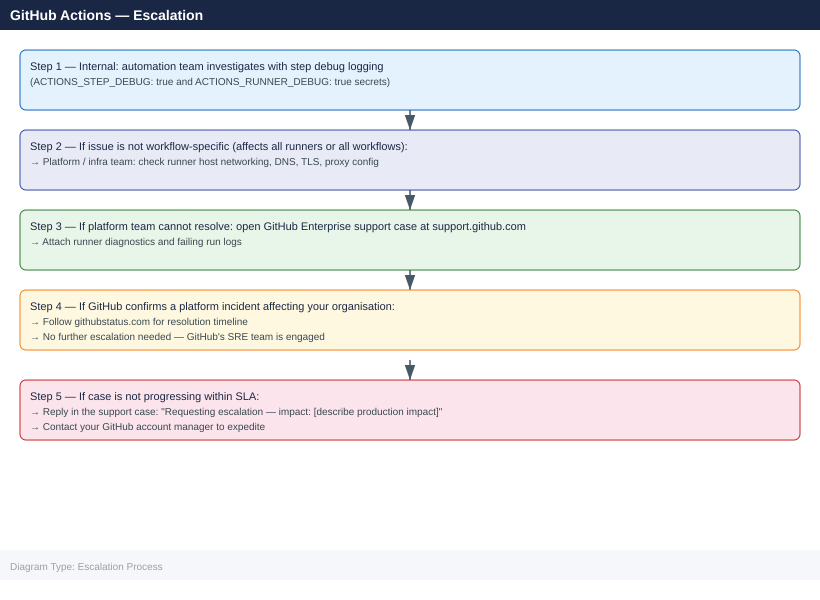

GitHub Actions — Escalation¶
Before you begin¶
- Access: Repository admin or org owner access; for Enterprise support, account admin access to the GitHub Enterprise contract
- Gather first: run ID, workflow name, runner name, and exact error message from the failed job log
- Scope: confirm whether the issue affects a single workflow, all workflows on one runner, or all runners org-wide
- Platform check: always check
githubstatus.combefore escalating — GitHub incidents account for many runner and API failures - Logging: enable step debug logging first (
ACTIONS_STEP_DEBUG: truesecret) to capture detailed output
Severity Levels¶
| Severity | Definition | Escalation Path |
|---|---|---|
| Critical | CI/CD completely blocked for production deployments; secret leak suspected | Immediate: platform team + GitHub Enterprise support by phone |
| High | All self-hosted runners offline; OIDC auth broken for all workflows | Same day: platform team → open GitHub Enterprise case |
| Medium | Single runner type failing; specific workflow failing consistently | Next business day: automation team investigation |
| Low | Intermittent runner timeout; occasional step failure with clear retry | Team: investigate with step debug logging |
Pre-Escalation Triage Checklist¶
Run through this before opening a GitHub Enterprise support case.
| Check | Command / Action | Expected |
|---|---|---|
| GitHub platform status | curl https://www.githubstatus.com/api/v2/status.json \| jq '.status' |
description: "All Systems Operational" |
| GitHub Actions status | Check githubstatus.com → Actions component | No active incident |
| Issue affects all runners | Test with a minimal workflow on a different runner label | If only one runner, it is a runner issue |
| Minimal workflow reproduces issue | Create a 3-step test workflow and trigger manually | Confirm if issue is workflow-specific or runner-global |
| Runner registration valid | Organization Settings → Actions → Runners | Runner shows "Active" or "Idle" |
| Runner version current | Compare runner version to github.com/actions/runner/releases | Outdated runner versions cause authentication errors |
| OIDC token endpoint reachable | Check workflow has id-token: write permission |
OIDC requires explicit permission declaration |
Step-by-Step Data Collection¶
Collect all of the following before opening a support case.
1. Get the failing run details¶
# Install GitHub CLI if not present: https://cli.github.com/
gh auth login
# View run details and logs for a specific run ID
gh run view <run-id> --log
# Download all logs for a run (saves to ./run-<id>/)
gh run download <run-id> --dir ./run-logs-$(date +%F)
# List recent failed runs for a repository
gh run list --status failure --limit 20
? What is your preferred protocol for git operations? HTTPS
? Authenticate Git with your GitHub credentials? Yes
? How would you like to authenticate GitHub CLI? Login with a web browser
! First copy your one-time code: F4D2-A8C9
Press Enter to open github.com in your browser...
✓ Authentication complete. Logged in as devops-admin
Name Status Conclusion Workflow Run ID Created
Deploy to Production completed failure deploy.yml 8472651 2024-01-15T14:32:10Z
Build and Test Suite completed failure ci.yml 8472598 2024-01-15T13:18:45Z
Security Scan completed success security.yml 8472547 2024-01-15T12:05:22Z
Unit Tests completed failure test.yml 8472489 2024-01-15T11:42:18Z
...
Downloading logs for run 8472651...
✓ Downloaded to ./run-logs-2024-01-15/
Common errors
| Error | Fix |
|---|---|
authentication required |
Run gh auth login first to authenticate with GitHub. |
HTTP 404: Not Found |
Verify the run ID exists and you have access to the repository with gh run list. |
permission denied while trying to connect to the Docker daemon |
This is a workflow runtime issue, not a CLI issue; check the run logs with gh run view <run-id> --log to see the actual failure in the Actions environment. |
2. Collect self-hosted runner diagnostics¶
# Runner diagnostics are in _diag/ under the runner install directory
ls -la /opt/actions-runner/_diag/
# Collect the most recent runner log files
ls -lt /opt/actions-runner/_diag/ | head -10
cp /opt/actions-runner/_diag/*.log /tmp/runner-diag-$(date +%F)/
# Get runner registration info (includes runner ID and org)
cat /opt/actions-runner/.runner
# Check runner service status (Linux)
sudo systemctl status actions.runner.*.service
# Check runner service status (macOS)
launchctl list | grep actions.runner
# Get runner application version
cat /opt/actions-runner/package.json | python3 -c "import sys,json; d=json.load(sys.stdin); print(d.get('version','unknown'))"
total 2048
drwxr-xr-x 8 runner runner 4096 Jan 15 10:42 .
drwxr-xr-x 5 runner runner 4096 Jan 10 09:15 ..
-rw-r--r-- 1 runner runner 512000 Jan 15 10:42 Worker_20250115-104215_abc123de.log
-rw-r--r-- 1 runner runner 384000 Jan 15 10:15 Worker_20250115-101530_xyz789ab.log
-rw-r--r-- 1 runner runner 256000 Jan 15 09:45 Runner_20250115-094512_def456gh.log
-rw-r--r-- 1 runner runner 128000 Jan 15 09:12 Runner_20250115-091200_ijk012mn.log
-rw-r--r-- 1 runner runner 64000 Jan 15 08:30 Startup_20250115-083000_opq345rs.log
...
{
"runnerId": 42,
"runnerName": "ubuntu-runner-01",
"runnerGroupId": 1,
"workFolder": "_work"
}
● actions.runner.myorg.ubuntu-runner-01.service - GitHub Actions Runner (myorg.ubuntu-runner-01)
Loaded: loaded (/etc/systemd/system/actions.runner.myorg.ubuntu-runner-01.service; enabled; vendor preset: enabled)
Active: active (running) since Mon 2025-01-15 08:22:14 UTC; 2h 20min ago
Main PID: 3847 (Runner.Listener)
CGroup: /system.slice/actions.runner.myorg.ubuntu-runner-01.service
2.315.0
Common errors
| Error | Fix |
|---|---|
cat: /opt/actions-runner/.runner: No such file or directory |
Verify the runner is installed in /opt/actions-runner and re-run the installation script if the directory is missing. |
sudo: systemctl: command not found |
Use launchctl list | grep actions.runner on macOS instead, or verify systemd is available on Linux systems. |
json.decoder.JSONDecodeError: Expecting value: line 1 column 1 (char 0) |
Ensure /opt/actions-runner/package.json exists and is valid JSON; reinstall the runner if the file is corrupted. |
3. Collect OIDC configuration (for OIDC/cloud auth issues)¶
# Check OIDC subject customization for the repo
gh api /repos/{owner}/{repo}/actions/oidc/customization/sub
# Check org-level OIDC policy
gh api /orgs/{org}/actions/oidc/customization/issuer
# Verify the workflow has correct permissions
grep -A5 'permissions:' .github/workflows/failing-workflow.yml
{
"use_default": false,
"include_claim_keys": [
"repo",
"context",
"actor"
]
}
{
"issuer_url": "https://token.actions.githubusercontent.com",
"audiance": "sts.amazonaws.com"
}
permissions:
id-token: write
contents: read
deployments: write
Common errors
| Error | Fix |
|---|---|
HTTP 404: Not Found |
Verify the repository slug format is correct and the repo exists with gh repo view {owner}/{repo}. |
Error: Not enough permissions to access this endpoint |
Ensure your GitHub token has admin:org_hook and repo scopes by running gh auth status. |
4. Export audit log (Enterprise only)¶
# Export last 100 audit log entries (requires org admin or enterprise admin)
gh api "/orgs/{org}/audit-log?phrase=action:workflows&per_page=100" \
--paginate | python3 -c "import sys,json; [print(json.dumps(e)) for e in json.load(sys.stdin)]" \
> audit-log-$(date +%F).jsonl
{"timestamp":"2024-01-15T14:32:18Z","action":"workflows.approve_workflow_run","actor":"alice-dev","org":"acme-corp","repo":"backend-service","workflow_id":2847,"conclusion":"success"}
{"timestamp":"2024-01-15T14:28:55Z","action":"workflows.disable_workflow","actor":"bob-admin","org":"acme-corp","repo":"infra-automation","workflow_name":"deploy-prod.yml","reason":"manual_disable"}
{"timestamp":"2024-01-15T13:45:22Z","action":"workflows.create_workflow_run","actor":"ci-bot","org":"acme-corp","repo":"frontend-app","branch":"main","workflow_id":1923}
{"timestamp":"2024-01-15T13:12:09Z","action":"workflows.approve_workflow_run","actor":"carol-lead","org":"acme-corp","repo":"data-pipeline","run_number":487}
{"timestamp":"2024-01-15T12:58:33Z","action":"workflows.update_workflow","actor":"alice-dev","org":"acme-corp","repo":"backend-service","file":".github/workflows/test.yml"}
...
Common errors
| Error | Fix |
|---|---|
gh: Unauthorized (HTTP 403) |
Verify your GitHub token has admin:org_hook and read:org scopes, or request org admin to grant audit log access. |
jq: parse error: Invalid JSON text at line 1 |
Remove the python3 JSON processor and use gh api --jq '.[] | @json' instead for cleaner parsing. |
No such file or directory |
Ensure the output directory exists and you have write permissions; create it with mkdir -p logs/ before running the command. |
5. Write the timeline¶
Create a plain text file:
GitHub org / repo: myorg/myrepo
Runner label: self-hosted, linux, x64
Runner hostname: runner-001.example.com
Runner version: 2.314.1
Issue first observed: 2026-06-15 10:30 UTC
Last known good run: 2026-06-15 09:00 UTC
Workflow: deploy-production.yml (Job: build)
Run ID: 9876543210
Error message:
Error: Process completed with exit code 1
##[error]Runner received signal: SIGTERM
Changes in 24h before issue:
- Runner host OS updated (Ubuntu 22.04 kernel update applied)
- No workflow changes
Blast radius:
- All jobs on self-hosted runners are failing
- GitHub-hosted runner jobs are not affected
How to Open a GitHub Enterprise Support Case¶
- Go to support.github.com and sign in with your Enterprise account.
-
If you cannot access the portal: contact your GitHub account manager to verify your Enterprise entitlement.
-
Click Open a new ticket.
-
Under Product area, select Actions for runner or workflow issues.
-
Under Priority, select:
- Urgent: CI/CD completely blocked for production; security incident involving secrets
- High: All runners offline; OIDC broken for the organisation
- Normal: Single workflow or runner type failing
-
Low: Questions, feature requests, documentation issues
-
In the Subject field, write one sentence:
GitHub Actions self-hosted runner [runner-name] exiting with SIGTERM since [date/time] — all jobs failing. -
In the Description, paste:
- GitHub org name and runner hostname
- Failing run IDs (at least 3 examples)
- Runner version and OS
- Timeline (from step 5 above)
-
The
_diag/log contents -
Under Attachments, upload:
- Runner diagnostic logs from
_diag/ - Workflow YAML file (
failing-workflow.yml) - Run log download from
gh run download -
Audit log export (if OIDC or secret issue)
-
Click Submit. You will receive a ticket number by email.
Escalation Path¶

What NOT to Do¶
| Do NOT do this | Why | What to do instead |
|---|---|---|
| Delete and re-register the runner while jobs are queued | Queued jobs stay assigned to the old runner and will never run | Drain the runner first: disable it in org settings, wait for queue to clear |
| Rotate organisation secrets during an active incident | All in-flight workflows will fail immediately with auth errors | Only rotate after confirming the exact secret affected; communicate the outage window |
| Force-cancel all running jobs without notifying teams | May corrupt state in downstream systems (deployments, database migrations) | Identify which jobs are safe to cancel; cancel only after team review |
Enable ACTIONS_STEP_DEBUG on production workflows permanently |
Leaks environment variables and sensitive inputs to logs | Enable only for isolated debug runs; remove the secret immediately after |
| Downgrade the runner binary manually | Unsigned binaries may not authenticate; runner auto-updates will re-upgrade | Pin runner versions at org level through GitHub settings, not manual binary replacement |
Useful Commands for Case Updates¶
# Confirm current GitHub platform status (include in every case update)
curl -s https://www.githubstatus.com/api/v2/components.json | \
python3 -c "import sys,json; [print(f'{c[\"name\"]}: {c[\"status\"]}') for c in json.load(sys.stdin)['components']]"
# Get all failed runs in the last 24 hours across a repository
gh run list --status failure --created ">=2026-06-14" --json databaseId,displayTitle,conclusion,createdAt | \
python3 -m json.tool
# Check if runner is receiving dispatched jobs
gh api /orgs/{org}/actions/runners --jq '.runners[] | {id, name, status, busy}'
# View specific step failure in a run
gh run view <run-id> --job <job-id> --log | grep -A10 "Error\|##\[error\]"
# Check workflow permissions
gh api /repos/{owner}/{repo}/actions/permissions/workflow
# List org-level secrets (names only, not values)
gh secret list --org {org}
GitHub: operational
Actions: operational
API Requests: operational
Webhooks: operational
Pages: operational
Codespaces: operational
[
{
"databaseId": 8947562341,
"displayTitle": "Deploy to production",
"conclusion": "failure",
"createdAt": "2026-06-14T18:32:15Z"
},
{
"databaseId": 8947501289,
"displayTitle": "Unit tests",
"conclusion": "failure",
"createdAt": "2026-06-14T14:21:09Z"
},
{
"databaseId": 8947445672,
"displayTitle": "Build and push image",
"conclusion": "failure",
"createdAt": "2026-06-14T09:15:43Z"
}
]
{
"runners": [
{
"id": 742,
"name": "ubuntu-runner-01",
"status": "online",
"busy": true
},
{
"id": 741,
"name": "ubuntu-runner-02",
"status": "online",
"busy": false
},
{
"id": 739,
"name": "macos-runner-prod",
"status": "offline",
"busy": false
}
]
}
2026-06-14T18:32:15Z ##[error] Docker image build failed: exit code 1
2026-06-14T18:32:16Z Error: failed to push image to registry.example.com/app:latest
2026-06-14T18:32:17Z ##[error] Authentication token expired
{
"enabled": true,
"allowed_actions": "all",
"selected_actions_url": ""
}
✓ SECRET_REGISTRY_TOKEN
✓ SLACK_WEBHOOK_URL
✓ DATABASE_PASSWORD
✓ DEPLOY_KEY
Common errors
| Error | Fix |
|---|---|
gh: command not found |
Install GitHub CLI with brew install gh (macOS) or apt-get install gh (Linux), then authenticate with gh auth login. |
HTTP 401: Bad credentials |
Verify your GitHub token is valid and has repo and admin:org_hook scopes by running gh auth status. |
jq: command not found |
Install jq with brew install jq (macOS) or apt-get install jq (Linux) for JSON filtering support. |
See also¶
Verify resolution¶
- Confirm a re-triggered run on the affected runner completes successfully
- Check
_diag/logs on the runner — noErrororSIGTERMentries during the new run - Verify the specific job that was failing (build, deploy, test) passes end-to-end
- Monitor for 2–3 runs to confirm the fix is stable before removing any workarounds